Next: Optimisation of the diffusion Up: The four parameter combinations Previous: Optimisation of the model-free Contents Index
The addition of the local  parameter to the set
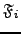
creates a new set of models which will be labelled
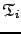
. These include models 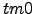
to
parameter to the set
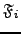
creates a new set of models which will be labelled
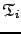
. These include models 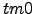
to  . The local
. The local  parameter is the single member of the set
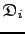
and in set notation
parameter is the single member of the set
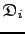
and in set notation
| 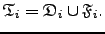 | (theparentequation.4) |
Although the Brownian rotational diffusion parameter local  is optimised, this category is residue specific. As such the complexity of the optimisation is lower than the next two categories. It is slightly greater than the optimisation of the set
as
is optimised, this category is residue specific. As such the complexity of the optimisation is lower than the next two categories. It is slightly greater than the optimisation of the set
as
| 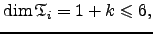 | (theparentequation.5) |
where 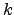 is the number of model-free parameters.
Edward d'Auvergne 2007-10-21